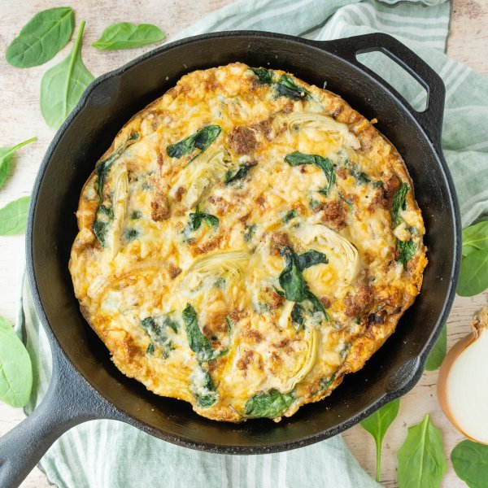

Sausage, Spinach & Artichoke Frittata with Parmesan

Total Time
40 min
Nutrition (Per Serving)
681.2 kcalCalories
46 gProtein
14.2 gCarbs
48.9 gFat
Full nutrition table
| Calories | 681.2 kcal |
| Total fat | 48.9 g |
| Saturated fat | 16.7 g |
| Trans fat | 0.3 g |
| Cholesterol | 581.9 mg |
| Sodium | 1084.7 mg |
| Carbohydrates | 14.2 g |
| Fiber | 5.3 g |
| Sugars | 2.7 g |
| Protein | 46 g |
| Potassium | 1069.4 mg |
| Calcium | 180.9 mg |
| Iron | 6.3 mg |
| Vitamin A | 931.9 IU |
| Vitamin C | 27.6 mg |
| Vitamin D | 136.9 IU |
Cookware
Ingredients
- 2 (6 oz) jarsartichoke hearts, marinated
- 2 (5 oz) pkgsbaby spinach
- 12eggs
- 4 clovesgarlic
- 3 ozParmesan cheese
- 4pork sausages
- 1 mediumyellow onion
- black pepper
- extra virgin olive oil
- Italian seasoning
- salt
Steps
- Preheat a large ovenproof skillet over medium-high heat.
- While the skillet heats up, peel and thinly slice onion into half rings.1 medium yellow onion
- Once the skillet is hot, add oil and swirl to coat the bottom. Add onion and cook, stirring occasionally, until soft, about 5 minutes.2 tsp extra virgin olive oil
- Meanwhile, wash and dry spinach (skip if it came pre-washed). Peel and mince garlic.2 (5 oz) pkgs baby spinach
4 cloves garlic - Add spinach to the skillet in handfuls, waiting for the spinach to wilt slightly before adding the next handful. Add garlic and spices, stir to combine, and remove from heat. Transfer spinach mixture to a medium bowl and set aside.1 tsp Italian seasoning
½ tsp salt
¼ tsp black pepper - Place eggs, salt, and pepper in a large bowl; whisk to combine and set aside.12 eggs
½ tsp salt
¼ tsp black pepper - Wipe skillet clean with paper towels and return to medium-high heat.
- While the skillet heats up, use the tip of a knife to slice down the length of each sausage. Peel off the casings and discard.4 pork sausages
- Once the skillet is hot, add more oil and swirl to coat the bottom. Add sausage meat and cook, breaking apart with a spoon, until browned and cooked through, about 5 minutes.2 tsp extra virgin olive oil
- Meanwhile, preheat oven to broil on high and position rack under the broiler.
- Drain and thinly slice artichokes; add artichokes and spinach mixture (leaving any juices in the bowl) to the skillet with the sausage; stir to combine.2 (6 oz) jars artichoke hearts, marinated
- Reduce heat to medium-low and pour in the egg mixture. As eggs set around the edge of the skillet, gently lift cooked portions with a spatula to allow uncooked egg to flow underneath. Cook until bottom and sides are firm but the top is still runny, about 7 minutes.
- Meanwhile, finely grate Parmesan.3 oz Parmesan cheese
- Sprinkle Parmesan over the frittata. Place skillet in the oven and broil until the top is set, 2-3 minutes. Remove from oven.
- To serve, cut frittata into wedges, place on plates, and enjoy!